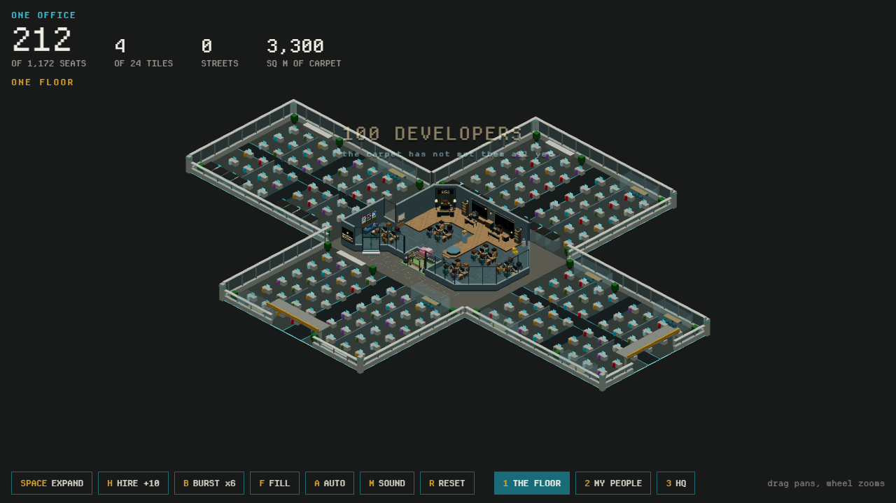
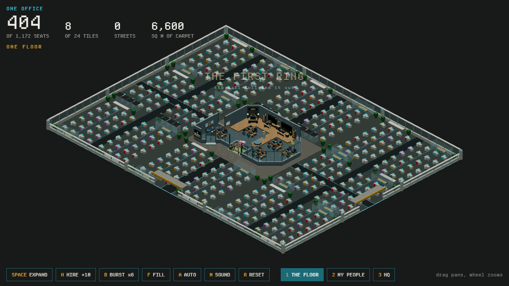
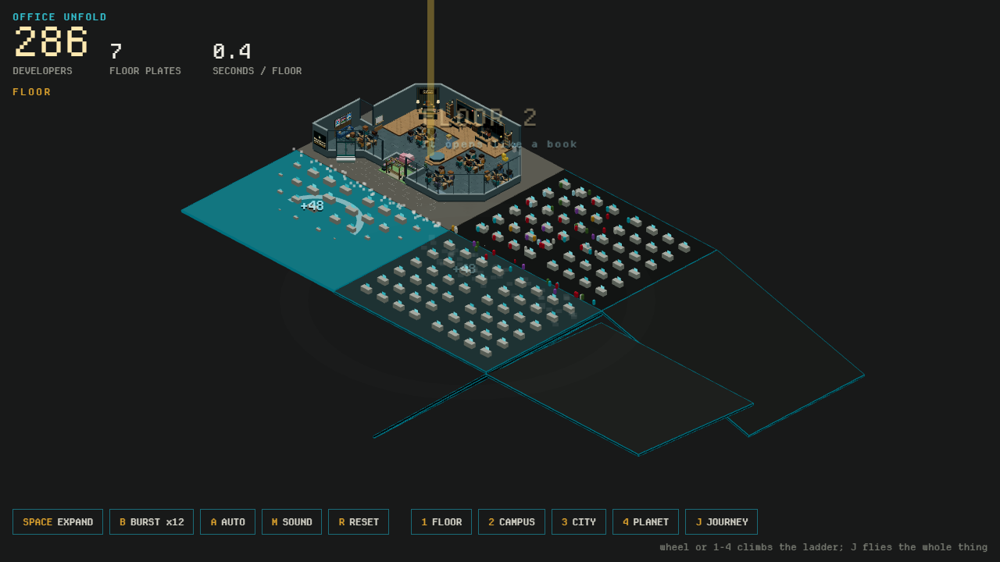
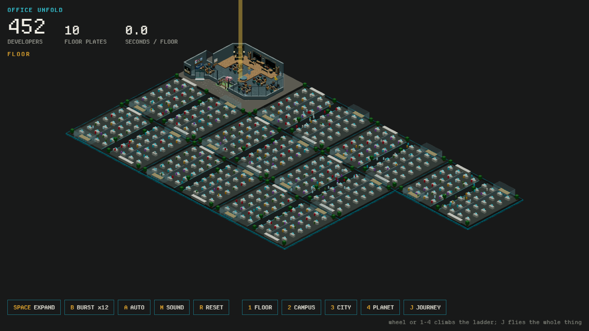
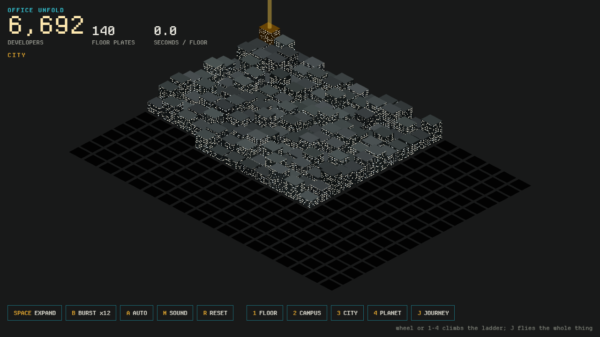
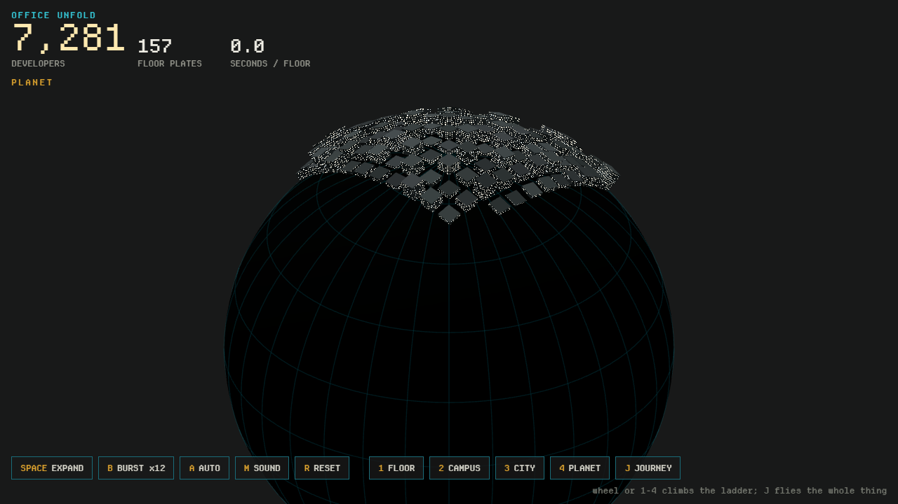
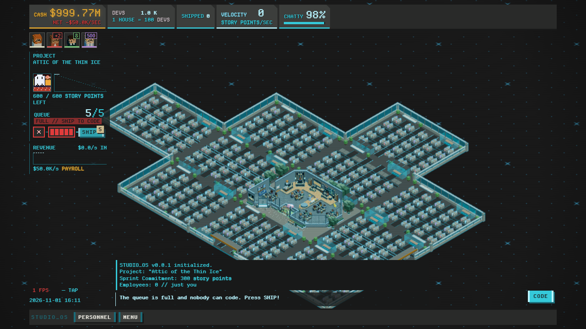
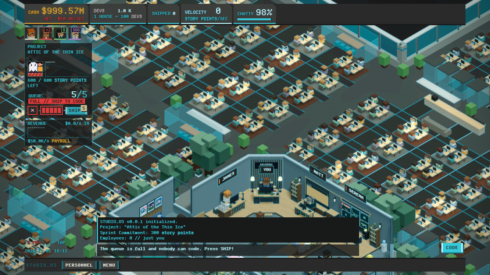
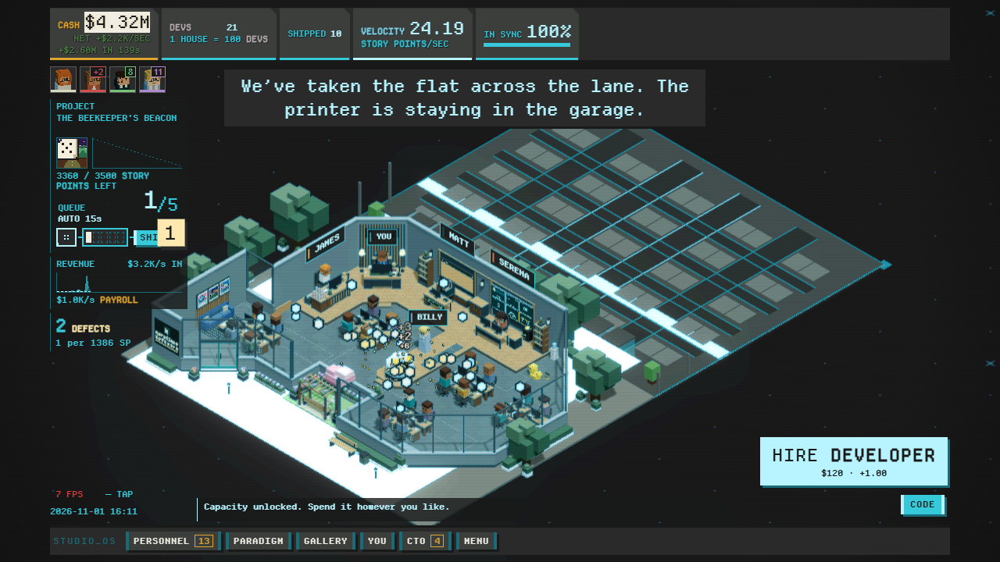
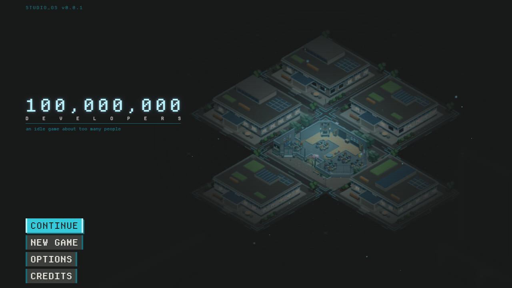

OFFICE UNFOLD: PROGRESS
2026-11-01. The ask began as infinite expansion where every new office unfolds from the last, instead of one house dropping after another, and became one big office, grown tile by tile. Where it stands, in the demos and in the game.
THE ASK, IN ORDER
| 1 | "each office expansion it's a unfold and expand to a new office space"; "don't just unfold from one direction, the headquarter should be in the center" (houses unfold, 2026-10-31). |
| 2 | "I don't want the houses unfolded one by one, I want the entire place as one big office"; then "I actually want some more profound change, I want the entire place as one contagious [contiguous] office". |
| 3 | After a draft that opened the whole floor at once: "good, but I want the tile by tile expansion". |
| 4 | "no need for the inner wall around the HQ", then "ok, implement in the game". |
THE IDEA
A new tile of floor is hinged on the edge it shares with its oldest neighbour. It starts folded under that neighbour, swings up, slams flat, then its furniture rises in a wave away from the seam and its people arrive. Nothing falls, and there is no unit to count: no street, no roof, no lot. The carpet, the aisles and the columns run across every seam, and the only wall is a glass one round the outside of what is open. When a tile opens beside a wall, that wall folds into the floor; when the tile goes, the wall comes back. The garage is the heart of the floor, with no wall between it and the tiles round it.
THE DEMOS
One office (new): docs/demos/one-office-2026-11-01/index.html. Standalone, loopback only, no game file touched; the real HQ is the middle of a 5 × 5 lattice of 33 × 25 m tiles, and tiles open outward from it on every side. Keys: Space expand a tile, H hire 10, B burst six tiles, F fill, A auto, M sound, 1-3 frame the floor, the people or the HQ. An earlier draft of it opened the whole floor in one gesture (four flaps round the HQ and one furniture wave); it is in git history at 9b8ea40 and was rejected for tile by tile.


Plates (the first demo): docs/demos/office-unfold-2026-10-30/index.html, the same unfold with a ladder above it. It still runs.




Keys: Space expand, B burst, A auto, M sound, 1-4 or the wheel climb floor, campus, city, planet, J flies the whole ladder. The sound was redesigned (airy swing, wooden slam, a marimba note per floor climbing a pentatonic scale) after the first siren-like sweep was rejected.
IN THE GAME
The city is one office now, in tiles. A tile is the garage's own apron size (33 × 25 m), laid edge to edge from the apron's centre; it holds the same hundred seats and the same cutaway interior the house did, with its islands spread so they fill the tile. The first four open north, west, east and south of the garage; each hangs from its neighbour's panel while it swings, so a burst folds open as a chain. A tile's people arrive when its furniture has risen.




| PIECE | WHAT CHANGED |
|---|---|
officeTile.ts | New. A tile: carpet, aisles, strips of rooms, columns, four sides of glass wall (each folds down when the tile beyond opens), the two front doors, a far-field of instanced desks, and the game's interior built the first time the lens is close. |
cityHouses.ts | Builds tiles instead of houses; same API. Hinge chain, wall bookkeeping, furniture wave, people arrive after it. No paving, lots or survey outlines. |
cityGrid.ts | officeTile, tileAt, cityParent; the district's addresses and order unchanged. |
cityInterior.ts | The house shell is gone (slab, wood floor, walls, glass front, doorway, board); houseSeat spreads the islands. |
garageView.ts | The HQ's lot bracket shows only while the garage stands alone. |
cityHouse.ts | Pruned to the old house exterior, which only the district's atlas bake still uses. |
GDD.html | §7.7.2 amended with the user's words and the argument; §7.8.1c and the layoff note point to it; the old bullets are marked superseded. |
Unchanged: the addresses and their order, the hundred seats, the garage's twenty, hires into a standing tile (the desk falls first), the landing's juice, and the thruster lift-off when a layoff or the first death empties a tile (§15.1a), now a tile lifting out of the floor with the walls beside it standing back up.
VERIFIED
Passed: eslint ., tsc -b, vitest run (170 files, 2,267 tests passed, 3 skipped) and art:check. New tests pin the claims: tiles touch with no gap and no overlap, every tile hangs from an older neighbour, a wall stands only where nothing is open beyond it and comes back when the tile goes, a new tile is thumped once when its furniture has risen, and a hundred desks fit a tile with an aisle between every island.
Looked at in headless Chrome, not played by hand: the game at 1,000 and at 100 developers, close up, and live with the 21st hire opening the first tile. Headless frame rate was about 10 fps for the old houses and the new tiles alike (far, mid and close), so no regression showed.
Not finished: npm run test:ui-frame, the real-browser frame gate, did not complete. It was started as the last step of npm run check and the run was killed because the machine was critically low on memory. Nothing in it failed; it has not been re-run.
NOT DONE
| ITEM | NOTE |
|---|---|
| The frame gate | See above. Re-run npm run test:ui-frame with other heavy programs closed. |
| The district rung | The atlas still bakes the old houses (cityHouse.ts, cityImpostors.ts) and the scale bar still reads 1 HOUSE = 100 DEVS (sim/headcount.ts, pinned by tests). The picture one rung up still shows blocks and streets. |
| Layoff or liquidation | Tested (a layoff lifts the tile off and its neighbours' walls come back), not driven in a browser. |
| First tile sits behind the HQ's back wall | The game's address order puts it north; the demo opens south first. Changing it changes saved addresses. |
| Phone layout | Not looked at in the game; in the demo the button bar covers the bottom of the floor on a phone-size frame. |
| Demo's desk lattice and avenues | Not ported: the game's own islands fill the tile, with the demo's room strips, columns, wall and doors. |
| City and planet rungs in the game | Plates demo only: the cube-sphere claim order for the other five faces, the monitor/phosphor handoff, the colony map, and a GDD pass on §7.4a. |